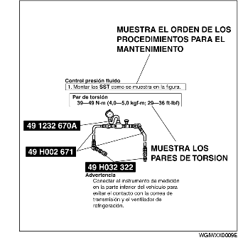
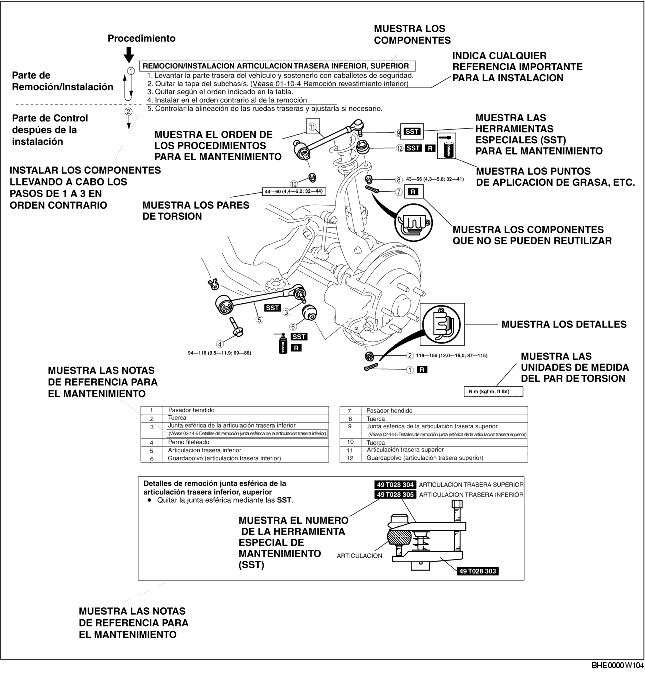
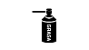

Este manual contiene los procedimientos para efectuar las operaciones de mantenimiento necesarias. Los procedimientos se dividen en las cinco operaciones de base siguientes:
Se han omitido las operaciones más sencillas (por ejemplo: remoción/instalación de componentes simples, elevación con gato, elevación del vehículo, limpieza de componentes e inspección visual) que pueden efectuarse fácilmente y de manera intuitiva.
Los procedimientos de control y ajuste están divididos en pasos. Los puntos importantes que se refieren a los procedimientos de mantenimiento se explican en detalle y se muestran en las ilustraciones.

1. La mayoría de las operaciones empiezan con una ilustración general. Esta sirve para identificar los componentes, muestra cómo están montados y describe la inspección visual. Sin embargo, solo los procedimientos de remoción/instalación que necesitan ser llevados a cabo metódicamente tienen instrucciones escritas.
2. La ilustración general muestra también los componentes expansibles, los pares de torsión y los símbolos que se refieren al aceite, a la grasa y a la masilla impermeable. Además hay símbolos que indican los componentes que necesitan herramientas especiales de mantenimiento (SST) o instrumentos equivalentes.
3. Los pasos de los procedimientos están numerados y el componente objeto del procedimiento está marcado en la ilustración con el número correspondiente. En algunos casos hay puntos fundamentales o informaciones suplementarias que se refieren al procedimiento.

Hay ocho símbolos que indican aceite, grasa, fluidos, masilla impermeable y la utilización de la SST (Herramienta Especial de Servicio) o equivalente. Estos símbolos especifican los puntos de aplicación durante el mantenimiento:
| Símbolo | Significado | Tipo / Aplicación |
|---|---|---|
| Aplicar aceite | Aceite para motor o aceite de engranaje nuevo y adecuado | |
| Aplicar fluido de frenos | Fluido de frenos nuevo y adecuado | |
| Aplicar fluido AT | Fluido para cambio automático/diferencial nuevo y adecuado | |
 |
Aplicar grasa | Grasa adecuada |
| Aplicar masilla impermeable | Masilla impermeable / Sellador adecuado | |
| Aplicar vaselina | Vaselina adecuada | |
| Sustituir componentes | O-ring, juntas, sellos, etc. (Piezas no reutilizables) | |
| Utilizar SST | Herramienta Especial de Servicio o equivalente |
En este manual se utilizan diferentes niveles de advertencias e información técnica:
Indica una situación peligrosa que puede causar heridas graves o la muerte.
Indica una situación que puede causar daños directos al vehículo o a sus componentes.
Contiene información suplementaria para completar adecuadamente un procedimiento.
Valores que indican la gama de referencia estándar para efectuar inspecciones y ajustes.
Valores límites tolerables que no se deben sobrepasar durante las inspecciones y ajustes.